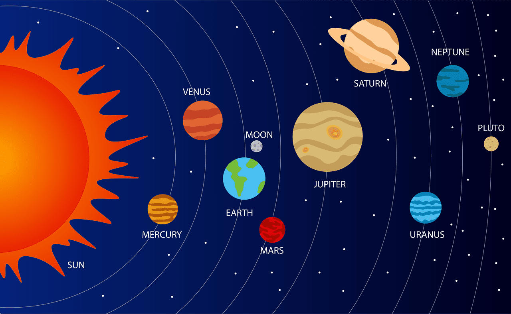
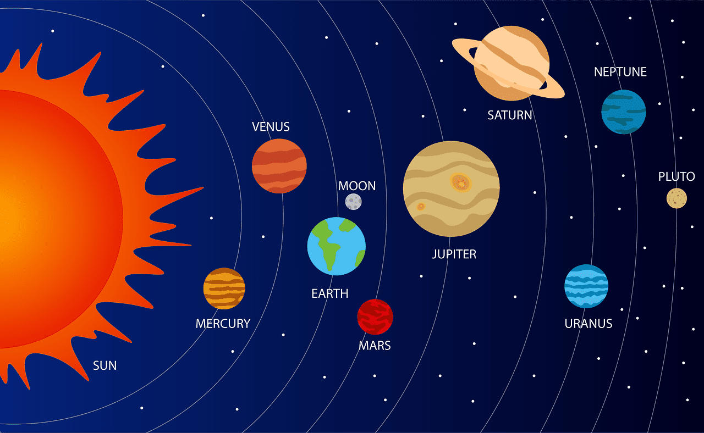

An exoplanet is any planet beyond our solar system. Most orbit other stars, but free-floating exoplanets, called rogue planets, orbit the galactic center and are untethered to any star. Most of the exoplanets discovered so far are in a relatively small region of our galaxy, the Milky Way. We know from NASA’s Kepler Space Telescope that there are more planets than stars in the galaxy.
By measuring exoplanets’ sizes (diameters) and masses (weights), we can see compositions ranging from very rocky (like Earth and Venus) to very gas-rich (like Jupiter and Saturn). Exoplanets are made up of elements similar to those of the planets in our solar system, but their mixes of those elements may differ. Some planets may be dominated by water or ice, while others are dominated by iron or carbon. We’ve identified lava worlds covered in molten seas, puffy planets the density of Styrofoam and dense cores of planets still orbiting their stars.
The first exoplanets were discovered in the 1990s and since then we’ve identified thousands using a variety of detection methods. It’s pretty rare for astronomers to see an exoplanet through their telescopes the way you might see Saturn through a telescope from Earth. That’s called direct imaging, and only a handful of exoplanets have been found this way (and these tend to be young gas giant planets orbiting very far from their stars).
Now we live in a universe of exoplanets. The count of confirmed planets is in the thousands and rising. That’s from only a small sampling of the galaxy as a whole. The count could rise to the tens of thousands within a decade, as we increase the number, and observing power, of robotic telescopes lofted into space.
Black Holes
A black hole is a dense, compact object whose gravitational pull is so strong that nothing can escape, not even light. Black holes are thought to result from the collapse of very massive stars. The gravity is so strong because their mass has been squeezed into a tiny space. The boundary in space around a black hole is called the "event horizon." Black holes follow the laws of gravity just like other objects in space. The idea of a body so big that even light could not escape was briefly proposed by English astronomical pioneer and clergyman John Michell in a letter published in November 1784.


 
